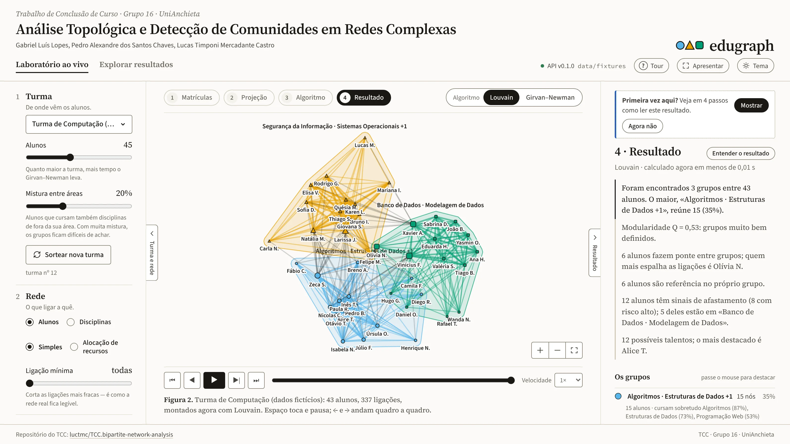
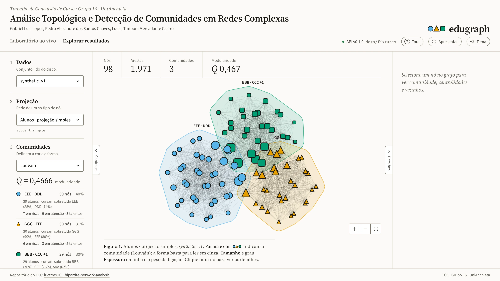
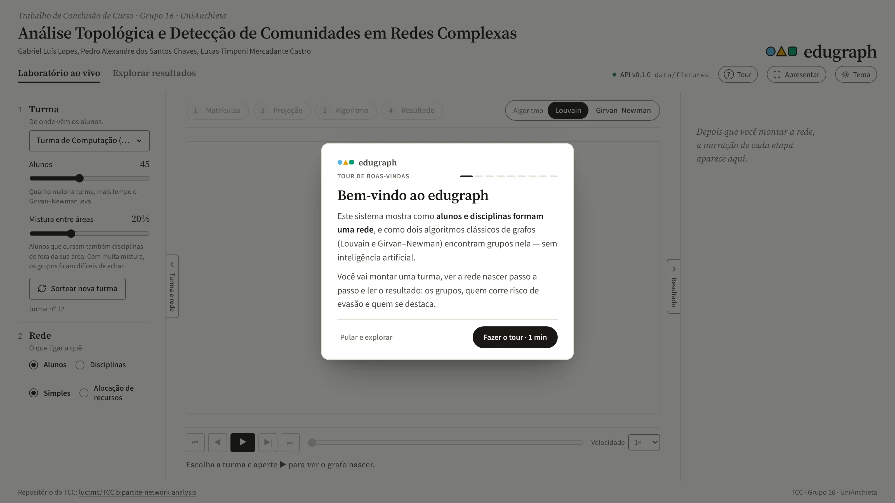

Centro Universitário Padre Anchieta · Ciência da Computação
Trabalho de Conclusão de Curso · Jundiaí, 2026
Análise Topológica e Detecção de Comunidades em Redes Complexas
Projeção de grafos bipartidos e métricas de centralidade em dados educacionais
Grupo 16
- Gabriel Luís Lopes
- RA 2300873
- Pedro Alexandre dos Santos Chaves
- RA 2301503
- Lucas Timponi Mercadante Castro
- RA 2304913
Orientador Prof. Me. Clayton Augusto Valdo
Rede real do trabalho — 98 alunos de synthetic_v1; cor e forma: as 3 comunidades encontradas pelo Louvain (Q = 0,4666)
Sumário
Roteiro da apresentação
- 1Introdução
contextualização, problema de pesquisa e objetivos
- 2Fundamentação teórica
grafos bipartidos, projeção, comunidades e centralidade
- 3Metodologia
caracterização da pesquisa, bases de dados e etapas
- 4Desenvolvimento
o sistema edugraph e a demonstração ao vivo
- 5Resultados e discussão
dados sintéticos, base real e validação a posteriori
- 6Considerações finais
conclusões, limitações e trabalhos futuros
01
Introdução
Por que olhar dados educacionais como uma rede?
1 · Introdução — Contextualização
Instituições de ensino acumulam dados sobre quem cursa o quê — e esses dados são, por natureza, relações.
Matrículas, notas e cliques no ambiente virtual
Exemplo público: o OULAD, com dados anonimizados de alunos de uma universidade aberta britânica (Kuzilek; Hlosta; Zdrahal, 2017).
Aluno ↔ disciplina, aluno ↔ recurso
A Ciência de Redes estuda sistemas assim como grafos: acha comunidades (Girvan; Newman, 2002) e mede centralidade (Brandes, 2001).
Planilhas ou modelos preditivos
A planilha esconde as relações; o modelo preditivo pode acertar sem explicar o porquê — e a gestão precisa justificar suas decisões.
1 · Introdução — Problema de pesquisa
É possível extrair padrões estruturais de dados educacionais — grupos de alunos semelhantes e gargalos no fluxo curricular — usando apenas algoritmos de Teoria dos Grafos, sem inteligência artificial, de forma interpretável e verificável?
Agrupamentos que a coordenação consegue ler e explicar, e disciplinas que funcionam como ponto de passagem do currículo.
Cada resultado pode ser rastreado até as ligações do grafo: não há modelo treinado nem caixa-preta.
Testar se a Ciência de Redes clássica é uma alternativa aos modelos preditivos opacos — inclusive quando a resposta for “não há estrutura”.
1 · Introdução — Objetivos
Projetar e implementar um sistema de análise estrutural capaz de mapear e extrair padrões ocultos em bases de dados educacionais utilizando puramente algoritmos de Teoria dos Grafos, sem o uso de IA.
- 1Modelar
os dados como um grafo bipartido aluno ↔ disciplina.
- 2Projetar
o bipartido em redes de um só tipo de nó, com a força da relação como peso.
- 3Agrupar
perfis com Louvain e Girvan–Newman, avaliados pela modularidade.
- 4Medir
intermediação e autovetor para identificar gargalos e atributos de impacto.
Nenhum componente usa aprendizado de máquina. test_no_ml.py barra bibliotecas como sklearn, torch e tensorflow; test_outcomes_isolation.py garante que o desfecho dos alunos só é lido na validação, depois do algoritmo.
02
Fundamentação teórica
Quatro ideias de Teoria dos Grafos — mostradas num caso real do repositório, com seis alunos.
2 · Fundamentação teórica — Grafo bipartido
Dois tipos de ponto; cada matrícula é uma linha.
Alunos de um lado, disciplinas do outro. Aluno nunca se liga diretamente a aluno: a relação entre eles passa pelas disciplinas.
O aluno 3 é o único que cursa as três disciplinas. A disciplina A tem 4 alunos; B e C têm 3 cada.
Fixture tiny_v1 do repositório: 6 alunos, 3 disciplinas e 10 matrículas (critério: nota ≥ 60; notas de 61 a 90).
Em uma fraseO bipartido guarda quem cursou o quê; as relações entre alunos ainda estão escondidas nele.
2 · Fundamentação teórica — Projeção
As disciplinas saem; os alunos se ligam pelo que têm em comum.
Conta as disciplinas em comum. Os alunos 1 e 2 dividem A e B: peso 2.
Cada disciplina vale 1 ÷ nº de alunos dela. A vale ¼, B vale ⅓: alunos 1 e 2 ficam com ¼ + ⅓ = 0,58.
Dividir uma disciplina que todo mundo cursa diz pouco sobre duas pessoas; dividir uma rara diz muito.
Em uma fraseA projeção transforma matrículas em afinidade entre alunos — a rede que os algoritmos vão ler.
2 · Fundamentação teórica — Comunidades e modularidade
Comunidade: muito ligada por dentro, pouco ligada ao resto.
A modularidade Q dá a nota de uma divisão em grupos: a fração das ligações que fica dentro dos grupos, menos a que ficaria lá por acaso (Newman; Girvan, 2004).
Em redes esparsas até um grafo sorteado tem Q alto. Por isso todo Q é comparado com réplicas sorteadas e só vale se ficar z ≥ 3 desvios acima (Guimerà; Sales-Pardo; Amaral, 2004).
2 · Fundamentação teórica — Algoritmo de Louvain
Louvain junta: cada aluno vai para o grupo em que Q mais sobe.
Cada pessoa começa sozinha numa mesa e, uma a uma, muda para a mesa vizinha onde a nota da divisão mais sobe. Para quando ninguém quer mudar (Blondel et al., 2008).
Rastro real de edugraph.lab.trace.louvain_trace sobre tiny_v1 (semente 42): 4 movimentos, Q de −0,132 a 0,111, dois grupos.
Em escalaNa turma da demonstração, o mesmo processo faz 41 movimentos, chega a Q = 0,53 e leva cerca de 1 ms.
2 · Fundamentação teórica — Algoritmo de Girvan–Newman
Girvan–Newman corta: apaga as pontes até a rede se partir.
- Acha a ponte mais usada — a ligação por onde passam mais caminhos: 3–4.
- Apaga e recalcula. Depois de 3–4 e 3–5, a rede se parte em dois grupos.
- Segue cortando e anota o Q de cada corte; fica com o maior (Girvan; Newman, 2002).
| Turma da demonstração | Q | grupos | tempo |
|---|---|---|---|
| Louvain | 0,53 | 3 | ≈ 1 ms |
| Girvan–Newman | 0,49 | 3 | ≈ 0,5 s |
2 · Fundamentação teórica — Métricas de centralidade
“Importante” tem três sentidos — cada métrica faz uma pergunta.
| Aluno | Grau | Intermediação | Autovetor |
|---|---|---|---|
| 3 | 1,00 | 0,60 | 0,56 |
| 1 e 2 | 0,60 | 0,00 | 0,52 |
| 6 | 0,60 | 0,00 | 0,33 |
| 4 e 5 | 0,40 | 0,00 | 0,15 |
- Grau — quantos vizinhos? O 3 se liga a todos.
- Intermediação (Brandes, 2001) — quem é ponte? Só o 3: todo caminho até 4 e 5 passa por ele. É o gargalo.
- Autovetor — quem está ligado a importantes? 1, 2 e 3 quase empatam: o bloco denso.
03
Metodologia
Como os resultados foram produzidos — e com que critério foram julgados.
3 · Metodologia — Caracterização da pesquisa
Uma pesquisa aplicada e quantitativa, feita por experimentos computacionais reproduzíveis.
Aplicada
Produz um sistema voltado à gestão pedagógica.
Quantitativa
Modularidade, NMI, pureza, centralidades e taxas de desfecho.
Experimental computacional
Cada configuração é um arquivo; semente fixa; mesmo resultado em toda execução.
Real e sintética
OULAD, pública, e um gerador sintético com grupos plantados, cuja resposta é conhecida.
| Pergunta de avaliação | Critério usado |
|---|---|
| Existe estrutura de grupos? | Q real contra réplicas nulas (mesmos graus, ligações sorteadas): ao menos 5 réplicas e z ≥ 3 (Guimerà; Sales-Pardo; Amaral, 2004) |
| Os grupos são os certos? | NMI e pureza contra as áreas plantadas no sintético |
| Quanto custa? | Tempo de execução de Louvain × Girvan–Newman na mesma rede |
| Tem relação com o desempenho? | Taxa de não conclusão (reprovado + desistente), cruzada só depois do algoritmo |
| A implementação está certa? | Comparação numérica das partes feitas à mão com o NetworkX |
3 · Metodologia — Etapas do método
Do dado ao resultado, uma etapa por vez.
- 1Dados
OULAD ou gerador sintético
- 2Bipartido
aluno ↔ disciplina
- 3Projeção
aluno ↔ aluno, com peso
- 4Comunidades
Louvain · Girvan–Newman
- 5Centralidade
grau · intermediação · autovetor
- 6Validação
só agora o desfecho entra
- 7API e interface
FastAPI · React
04
Desenvolvimento
O sistema construído — e ele funcionando, ao vivo.
4 · Desenvolvimento — Como o trabalho foi conduzido
Sete semanas, três frentes em paralelo — cada decisão registrada.
- Dia 0
Arquitetura, contratos dos dados e fixtures completas
- Dados e comunidades
Gerador, ETL do OULAD, projeções, modelo nulo, Louvain e Girvan–Newman
- Centralidade e aplicação
Métricas, disciplinas críticas, API e interface integradas
- Auditoria e redesenho
Pendências fechadas; identidade editorial da interface
- Laboratório ao vivo
A rede montada na hora, com o passo a passo dos algoritmos
- Entrega
Comando único de instalação e revisão final
- Especificações
- 23 fechadas
- Decisões de arquitetura
- 14 ADRs
- Pull requests
- 16 com CI verde
- Testes automatizados
- 428 + 32 da interface
4 · Desenvolvimento — Arquitetura do sistema
A fronteira entre as frentes é o disco. Nenhuma frente importa outra.
__main__.pya única composição das frentes · CLI python -m edugraphETL do OULAD, gerador sintético, bipartido, projeções
Louvain, Girvan–Newman, Q, caracterização
grau, intermediação, autovetor, disciplinas críticas
FastAPI, React, Cytoscape.js
<raiz>/<dataset>/<camada>/<id>/CSV + meta.json, layout fixo e validado- 1
Três frentes por assunto
Dados, comunidades, centralidade e aplicação — cada uma num pacote.
- 2
Contratos e fixtures primeiro
O formato dos artefatos entrou no dia 0, com fixtures completas: B e C rodavam sem executar uma linha de A.
- 3
A regra é testada
test_import_boundaries.pyfalha se aparecer import cruzado. - 4
Trocar de fonte é trocar
--rootDo sintético ao OULAD, nenhuma linha de código muda.
4 · Desenvolvimento — Comunicação entre os componentes
O que acontece quando se aperta ▶.
4 · Desenvolvimento — O sistema edugraph
Duas telas: uma monta a rede ao vivo; a outra explora os resultados já calculados.


Capturas reais do sistema, servido sobre data/fixtures em 16/11/2026 (1600 × 900).
4 · Desenvolvimento — Os dados da demonstração
Uma turma de Computação fictícia, gerada na hora — com a resposta certa guardada à parte.
Algoritmos · Estruturas de Dados · Programação Web
Redes · Sistemas Operacionais · Segurança da Informação
Banco de Dados · Modelagem de Dados
- ·
Cada aluno cursa 2 ou 3 disciplinas da sua área e, com a chance da mistura, uma de fora.
- ·
A matrícula vira ligação com nota média ≥ 50. Alguns alunos “em risco” recebem notas menores.
- ·
A área plantada de cada aluno fica fora do grafo e só volta na revelação, para medir o acerto.
- Turma padrão · semente 12
- 43 alunos
- Disciplinas
- 8
- Matrículas (bipartido)
- 93
- Ligações na projeção
- 337
Gerador: src/edugraph/lab/demo.py sobre a spec A-01 (data/synthetic.py). Nomes e desfechos inventados — nada é dado de aluno real.
4 · Desenvolvimento — Demonstração
O edugraph, rodando agora.
- Tour de boas-vindas — 9 passos
- ▶ matrículas → projeção → Louvain → resultado
- Revelar as áreas plantadas
- Girvan–Newman na mesma turma
- Mistura 50% e sortear outra turma
Dentro do sistema, o teclado é dele (espaço, ← →, F). Para voltar, use o botão no topo da tela.
Reserva: · abrir em outra janela

Sistema fora do ar. Mostrando capturas reais (16/11/2026) — não é execução ao vivo. Suba com python apresentacao/servir.py e aguarde: a janela reconecta sozinha.
Figura. O edugraph em execução neste computador, com a turma fictícia gerada pelo próprio servidor a cada ▶ — sem vídeo e sem simulação.
05
Resultados e discussão
Primeiro onde existe resposta certa; depois na base real.
5 · Resultados — O teste contra o acaso
Antes de confiar num Q, comparamos com redes sorteadas.
5 · Resultados — O método funciona (dados sintéticos)
No sintético, os grupos que o Louvain encontra são as áreas plantadas.
- Q real · Louvain
- Q 0,467
- Comunidades encontradas
- 3 de 39, 30 e 29 alunos
- Distância ao acaso
- z = +15,4
- NMI contra as áreas plantadas
- 0,819
- Pureza
- 0,949
1.453× mais lento, com Q menor (0,417). As partições concordam (NMI 0,774): o achado é da estrutura, não do algoritmo.
A pureza quase não cai (0,864); o NMI cai pela metade (0,495).
Os grupos continuam homogêneos, mas deixam de corresponder às áreas. É o mesmo mecanismo que vai aparecer no OULAD.
synthetic_v1 · 98 alunos, 7 disciplinas, 35% de ruído · projeção aluno ↔ aluno simples · Louvain com semente 42 · nulo: 5 réplicas (semente 0) · docs/artigo/decisoes-metodologicas.md (A-08, B-01 a B-07), reproduzido em 16/11/2026
5 · Resultados — A base real (OULAD)
Por matrícula, os “grupos” do OULAD são indistinguíveis do acaso. Pelo comportamento no ambiente virtual, a estrutura aparece.
Indistinguível do acaso O Q alto vem da esparsidade: 91,8% dos alunos cursam um módulo só.
5,2×
9,2×
7,0×
Estrutura real, fraca Q absoluto baixo, mas 5 a 9 vezes o das redes sorteadas, em três coortes.
Achado de método: sob o esqueleto, a ponderação simples cai abaixo do nulo (premia volume de cliques); a alocação de recursos se mantém acima. A escolha da ponderação decide se o sinal aparece.
docs/artigo/decisoes-metodologicas.md · seções A-08 e “O critério de aresta muda de matrícula para interação no AVA” · docs/orientador/nota-01-criterio-de-aresta.md
5 · Resultados — O que o grafo nunca viu
A posição do aluno na rede, obtida sem nenhum rótulo, separa quem conclui de quem não conclui.
results/tables/tab8b-desfecho-faixa-oulad_vle_bbb_2013j-eigenvector.csv«Pouco engajados»: 69% de reprovados e desistentes
contra 7% em «Engajamento moderado». O grupo foi encontrado pelo Louvain antes de qualquer cruzamento com o desfecho.
Não é previsão
Quem desiste para de acessar o ambiente — parte do sinal é mecânica. Para afirmar antecipação seria preciso usar só as primeiras semanas: fica como trabalho futuro.
5 · Resultados — Disciplinas críticas no currículo
As três métricas apontam disciplinas diferentes — e a discordância é o achado.
| Métrica | Topo 3 · 22 ofertas de módulo |
|---|---|
| Grau | DDD_2014J · FFF_2014J · CCC_2014B |
| Intermediação | FFF_2014B · DDD_2014J · FFF_2014J |
| Autovetor | CCC_2014J · CCC_2014B · DDD_2013J |
Ser ponte e estar num bloco central são dimensões diferentes. No top 5, FFF_2014B, FFF_2013J e BBB_2014J aparecem só na intermediação: pontes sem ser populares.
A não conclusão nas 5 disciplinas de maior intermediação fica só 1,2 p.p. acima da base (37,6%). Um gargalo estrutural é um ponto de passagem no currículo, não uma disciplina difícil — e a centralidade não é um disfarce da reprovação.
oulad_module_presentation · discipline_simple · results/tables/tab6-*, tab7-discordancia-*, tab8-reprovacao-*
06
Considerações finais
A resposta à pergunta de pesquisa — e o que fica para depois.
6 · Considerações finais — Conclusões
Teoria dos Grafos, sem IA, produz agrupamentos interpretáveis e rastreáveis — e também sabe dizer quando não há estrutura.
Resposta à pergunta de pesquisaSim — com uma condição: o sinal tem de existir nos dados. Onde existe, o método o encontra; onde não existe, o modelo nulo diz isso.
- 1Modelar e projetar
Bipartido e duas projeções implementados à mão, conferidos com o NetworkX — até em 1,45 milhão de arestas.
- 2Agrupar
No sintético, o Louvain recupera as áreas plantadas (NMI 0,82; z = +15,4). Girvan–Newman confirma, 1.453× mais lento.
- 3Medir
As métricas discordam de forma informativa; o gargalo estrutural não é a disciplina que mais reprova.
- 4Dado real
O sinal está no comportamento, não na matrícula — e o método distingue estrutura de acaso.
6 · Considerações finais — Limitações e trabalhos futuros
O que o trabalho não afirma — e o próximo passo para cada ponto.
| Limitação | Por quê | Trabalho futuro |
|---|---|---|
| Não é previsão de evasão | Quem desiste para de acessar o AVA: parte do sinal é mecânica | Medir a centralidade só com as primeiras semanas |
| Sinal real fraco | Q de 0,05 a 0,08 no AVA: inequívoco contra o acaso, mas baixo | Outras granularidades e instituições, sempre com modelo nulo |
| Girvan–Newman não escala | Custo O(m²n): na base real, só em amostras | Rodar na coorte com amostra menor |
| Viés do limiar de nota | Nota mínima 40 deixa 3.674 alunos de fora do bipartido | Bipartido por matrícula, sem limiar |
| Uso local, sem autenticação | A API foi feita para rodar na máquina da instituição | Versão online só com dados fictícios |
Referências
- BLONDEL, V. D. et al. Fast unfolding of communities in large networks. Journal of Statistical Mechanics: Theory and Experiment, [s. l.], v. 2008, n. 10, P10008, 2008. DOI: 10.1088/1742-5468/2008/10/P10008.
- BRANDES, U. A faster algorithm for betweenness centrality. The Journal of Mathematical Sociology, [s. l.], v. 25, n. 2, p. 163-177, 2001. DOI: 10.1080/0022250X.2001.9990249.
- GIRVAN, M.; NEWMAN, M. E. J. Community structure in social and biological networks. Proceedings of the National Academy of Sciences, Washington, DC, v. 99, n. 12, p. 7821-7826, 2002. DOI: 10.1073/pnas.122653799.
- GUIMERÀ, R.; AMARAL, L. A. N. Functional cartography of complex metabolic networks. Nature, London, v. 433, p. 895-900, 2005. DOI: 10.1038/nature03288.
- GUIMERÀ, R.; SALES-PARDO, M.; AMARAL, L. A. N. Modularity from fluctuations in random graphs and complex networks. Physical Review E, [s. l.], v. 70, n. 2, 025101, 2004. DOI: 10.1103/PhysRevE.70.025101.
- HAGBERG, A. A.; SCHULT, D. A.; SWART, P. J. Exploring network structure, dynamics, and function using NetworkX. In: PYTHON IN SCIENCE CONFERENCE, 7., 2008, Pasadena. Proceedings [...]. Pasadena: SciPy, 2008. p. 11-15.
- KUZILEK, J.; HLOSTA, M.; ZDRAHAL, Z. Open University Learning Analytics dataset. Scientific Data, [s. l.], v. 4, 170171, 2017. DOI: 10.1038/sdata.2017.171.
- NEWMAN, M. E. J. Scientific collaboration networks. II. Shortest paths, weighted networks, and centrality. Physical Review E, [s. l.], v. 64, n. 1, 016132, 2001. DOI: 10.1103/PhysRevE.64.016132.
- NEWMAN, M. E. J.; GIRVAN, M. Finding and evaluating community structure in networks. Physical Review E, [s. l.], v. 69, n. 2, 026113, 2004. DOI: 10.1103/PhysRevE.69.026113.
- OKABE, M.; ITO, K. Color Universal Design (CUD): how to make figures and presentations that are friendly to colorblind people. [S. l.]: J*Fly, 2008. Disponível em: https://jfly.uni-koeln.de/color/. Acesso em: 16 nov. 2026.
- ZHOU, T. et al. Bipartite network projection and personal recommendation. Physical Review E, [s. l.], v. 76, n. 4, 046115, 2007. DOI: 10.1103/PhysRevE.76.046115.
Grupo 16 · UniAnchieta · 2026
Obrigado.
Ficamos à disposição para as perguntas da banca.
- Gabriel Luís Lopes
- RA 2300873
- Pedro Alexandre dos Santos Chaves
- RA 2301503
- Lucas Timponi Mercadante Castro
- RA 2304913
Orientador Prof. Me. Clayton Augusto Valdo
Repositório github.com/luctmc/TCC.bipartite-network-analysis
Apêndice · Tecnologias
Cada escolha tem um motivo registrado — e nenhuma é de aprendizado de máquina.
| Camada | Tecnologia | Por quê | Registro |
|---|---|---|---|
| Algoritmos | Python 3.11+ · NetworkX 3.6 · python-louvain · pandas · NumPy · SciPy | Referência acadêmica de grafos; as implementações à mão são comparadas com ela. | ADR-0010 |
| Armazenamento | CSV + meta.json por artefato, em disco | Legível, versionável, comparável byte a byte; não há banco de dados. | ADR-0001 · 0002 |
| API | FastAPI + Uvicorn | Esquemas tipados, documentação em /docs, serve a interface compilada. | ADR-0004 · 0013 |
| Interface | React 18 · TypeScript · Vite 5 | Componentes tipados; o build vai para dentro do pacote Python. | ADR-0005 |
| Grafo na tela | Cytoscape.js (layout fCoSE) · Framer Motion | Desenho em canvas para milhares de arestas; animação que respeita “reduzir movimento”. | ADR-0005 |
| Qualidade | pytest · ruff · mypy · ESLint · GitHub Actions | CI em Python 3.11 e 3.13; main só recebe PR com CI verde. | ADR-0009 · 0011 |
Apêndice · Modelagem dos dados
Cada etapa é uma pasta. O meta.json conta quem gerou, como e quando.
data/fixtures/synthetic_v1/ ├─ bipartite/ │ ├─ nodes.csv id, kind, label │ ├─ edges.csv source, target, weight │ ├─ outcomes.csv desfecho, à parte │ └─ meta.json ├─ projections/student_simple/ │ ├─ nodes.csv · edges.csv · meta.json ├─ communities/louvain__student_simple/ │ ├─ membership.csv · meta.json └─ centrality/student_simple/ ├─ degree.csv · betweenness.csv └─ eigenvector.csv · *.meta.json
Aluno e disciplina são nós; a matrícula é aresta
kind marca o lado do bipartido. O “lado disciplina” também pode ser uma oferta, uma avaliação ou um recurso do ambiente virtual (ADR-0012).
meta.json em todo artefato
schema_version, a especificação que o gerou, os parâmetros (inclusive a semente) e quem o produziu.
python -m edugraph validate
Confere layout, colunas e coerência entre camadas — por exemplo, se a partição cobre todos os nós da projeção.
Apêndice · Comunicação entre os componentes
Um clique em ▶ vira uma rede montada no servidor — e o rastro do algoritmo volta para ser animado.
lab_routes.pyPOST /lab/run · turma, mistura, projeção, algoritmo- gera a turma fictícia (gerador da A-01)
- bipartido → projeção (à mão)
- Louvain com cada movimento ou Girvan–Newman com cada corte
- leitura: nomes dos grupos, papéis, sinais
frames.ts transforma o rastro em quadros · o canvas só liga e desliga classesLimites que protegem o servidor: 24 a 75 alunos, 4.000 ligações, 1.500 no Girvan–Newman e 60 s. O pesado (OULAD inteiro) continua só pela linha de comando.
Apêndice · Como sabemos que está certo
Três algoritmos foram escritos à mão — e cada um é conferido contra a biblioteca.
| Implementado pelo grupo | Comparado com | Resultado medido |
|---|---|---|
| Projeções simples e por alocação de recursos | nx.bipartite.* | diferença < 10⁻⁹ nas fixtures; na coorte real (1,45 milhão de arestas), 1,7 × 10⁻¹⁸ — e mais rápida: 5,2 s contra 9,5 s e 22,5 s |
| Modularidade Q (forma fechada) | nx.community.modularity | diferença máxima de 3,2 × 10⁻¹⁵ nas quatro projeções de synthetic_v1 |
| Autovetor (iteração de potência sobre A + I) | nx.eigenvector_centrality | concordam abaixo de 10⁻⁶ com o mesmo critério de parada; em tiny_v1, bate a forma fechada λ = (3+√17)/2 |
| Louvain com rastro (laboratório) | python-louvain | teste exige |ΔQ| < 0,02; na turma padrão, mesma partição e mesmo Q (0,528) |
todo algoritmo estocástico grava a sua em params
regeneradas idênticas; um job da CI confere
os valores de tiny_v1 foram derivados à mão, não copiados da biblioteca
Apêndice · Decisões que os dados forçaram
Quatro problemas reais, e o que fizemos com cada um.
O Girvan–Newman não termina na base real
Custo O(m²n). Roda com orçamento de tempo verificado a cada remoção e devolve status = timeout com a melhor partição vista — nunca uma exceção.
91,8% dos alunos do OULAD cursam um só módulo
A rede por matrícula quase não tem informação entre alunos. O critério de aresta passou a ser a interação com o ambiente virtual: o grau mediano do aluno vai de 1 para 40.
1,75 milhão de arestas não se desenham
As 5.000 mais pesadas tocavam só 193 de 1.870 alunos. A API envia o esqueleto — as k mais fortes de cada nó — e a tela avisa o corte.
Q alto pode ser acaso
Todo Q é comparado com réplicas nulas (mesmos graus, ligações sorteadas). O critério: ao menos 5 réplicas e z ≥ 3.
Apêndice · Segurança e tratamento de dados
O que o sistema protege — e o que ele, honestamente, não se propõe a proteger.
- ✓
Dados públicos e anonimizados
OULAD (Kuzilek; Hlosta; Zdrahal, 2017), licença CC BY 4.0. A turma do laboratório é fictícia: nomes e desfechos inventados.
- ✓
Rótulos fora do grafo
Desfecho só em
outcomes.csv, lido apenas porevaluate.py(ADR-0008). - ✓
Sem exposição individual
O relatório interno não publica perfis por aluno e é varrido atrás de ids antes de ser gravado.
- ✓
Servidor protegido por limites
Tamanho, número de ligações e tempo máximo no laboratório; erros viram respostas legíveis.
Não há autenticação
A API foi feita para uso local e interno: roda em 127.0.0.1, e o único POST é o do laboratório, limitado. Uma implantação pública exigiria autenticação e controle de acesso — está registrado como consequência na ADR-0013.
Apêndice · Evidências de implementação
O que foi entregue está coberto por testes — e a integração contínua não deixa quebrar.
- Testes Python · suíte completa
- 428 passaram
- Testes da interface
- 32 passaram
- Especificações fechadas
- 23 de 23
- Decisões registradas
- 14 ADRs
| Camada | O que garante |
|---|---|
| Contrato | sem ML · sem rótulo no grafo · sem import cruzado · escrita byte a byte |
| Unitários | pesos de tiny_v1 derivados no papel; manual = NetworkX; Louvain recupera as áreas |
| API e laboratório | cada rota responde e valida no esquema; sinais e rastro do algoritmo |
| Interface | lógica da animação, do tour e do cliente da API |
Lint, formatação e tipos: ruff, mypy (estrito em contracts), tsc e ESLint sem nenhum aviso.
CI: Python 3.11 e 3.13, mais um job que regenera as fixtures e exige diff vazio.
Executado em 16/11/2026 numa cópia limpa do repositório (Linux, Python 3.13, Node 22): pytest completo — 428 passaram e 1 foi pulado por exigir o OULAD, ausente nas fixtures; 45 s.
Apêndice · Limitações conhecidas
O que o trabalho não afirma — e por quê.
Girvan–Newman só em amostras
Na coorte por avaliação, passa de 2 h; ficou só com Louvain e centralidade.
O sinal real é fraco
Q de 0,05 a 0,08 no ambiente virtual: inequívoco contra o acaso, mas baixo.
Desfecho não é previsto
Parte do sinal é mecânica; um desfecho por aluno; o limiar de nota 40 deixa 3.674 alunos de fora.
Papéis e sinais são descritivos
Limiares de Guimerà–Amaral adaptados; “risco de evasão” é indicador estrutural, nome em discussão com o orientador.
Uma instituição
O OULAD é uma universidade aberta britânica, com perfil de aluno e currículo próprios.
Pendências registradas
Sem autenticação; o pipeline pode misturar rodadas com raízes repetidas (T-OBS-02); sem teste de navegador.
Apêndice · As fórmulas, como estão no código
Tudo o que o sistema calcula cabe em cinco expressões.
| Grandeza | Definição | Onde |
|---|---|---|
| Projeção simples | wij = Σk ∈ N(i) ∩ N(j) 1 — a diagonal externa de B·Bᵀ | data/projection/manual.py |
| Alocação de recursos | wij = Σk ∈ N(i) ∩ N(j) 1 / grau(k) (Zhou et al., 2007) | data/projection/manual.py |
| Modularidade | Q = Σc [ mc/m − γ (Kc/2m)² ], γ = 1 · custo O(m + n) | community/modularity.py |
| Autovetor | xt+1 = (A + I) xt / ‖·‖₂, x₀ = 1/n, para quando ‖Δx‖₁ < 10⁻⁸·n | centrality/eigenvector.py |
| Distância ao acaso | z = (Qreal − média Qnulo) / desvio Qnulo, ≥ 5 réplicas, estrutura se z ≥ 3 | data/nullmodel.py |
Intermediação: algoritmo de Brandes (NetworkX), com o peso tratado como caminho em saltos (weight_mode = none) em projeção esparsa e inverse em projeção quase completa, com amostragem k = 200. NMI e Rand ajustado: implementados à mão sobre a tabela de contingência.
Apêndice · Duas escolhas do Girvan–Newman
Ponte escolhida sem peso; Q reportado com peso; orçamento checado a cada corte.
Intermediação não ponderada
No NetworkX, peso em caminho mínimo é distância; nas projeções, peso alto é afinidade. Usá-lo inverteria o critério de remoção.
Q ponderado
Para ser comparável com o do Louvain. As duas escolhas ficam gravadas em params.
Orçamento por remoção
O primeiro corte de synthetic_v1 custa 15 s dos 34 s. Estourou: status = timeout e a melhor partição vista.
Rodando sobre amostra, o artefato ganha o sufixo __sample<N>, para que a partição de 400 alunos nunca seja lida como a da projeção inteira. Consequência visível no laboratório: com muita mistura entre áreas, ele corta ligações de dentro dos grupos e fragmenta (mistura 100%: 28 grupos, Q 0,02, contra 3 grupos e Q 0,19 do Louvain).
Apêndice · “Quem merece atenção” e “possíveis talentos”
Uma média ponderada fixa, sem treino — indicador estrutural, não previsão.
risco = 0,35 · carga + 0,35 · intensidade + 0,30 · vínculo
- ·
Carga
nº de disciplinas, em desvios-padrão contra a turma
- ·
Intensidade
nota ou atividade de cada matrícula frente à média da disciplina
- ·
Vínculo com o grupo
o z dentro do módulo, de Guimerà e Amaral
≥ 0,25 atenção · ≥ 0,50 alto. Talento: intensidade ≥ 1 desvio acima, destaque numa disciplina (z ≥ 1,5) ou ponte sem perder desempenho.
No AVA (BBB 2013J), dos 197 alunos com risco alto, 94% reprovaram ou desistiram — contra 43% da turma. A conferência fica em community/evaluate.py (taxa por faixa e AUC).
Pergunta levada ao orientador (T-OBS-05): manter o nome “risco de evasão”, renomear ou deixar como trabalho futuro.
Apêndice · Papel de cada nó no resultado
Quatro papéis, a partir de Guimerà e Amaral — com limiares adaptados e declarados.
| Papel | Ligações dentro do grupo | Ligações para outros grupos | Leitura |
|---|---|---|---|
| Referência do grupo | muitas (z ≥ 1) | poucas | muito ligado no próprio grupo |
| Conector | muitas (z ≥ 1) | espalhadas | central no grupo e ligado a outros |
| Ponte | poucas | espalhadas | pouco central no grupo, mas liga grupos |
| Periférico | poucas | poucas | poucas ligações, quase todas dentro |
“Espalhadas”: coeficiente de participação P acima do típico do próprio grupo, com margem de 0,05. Por que adaptar: com os limiares originais (z ≥ 2,5 e P fixo), numa projeção densa, 1.585 dos 1.870 alunos do AVA viravam “ponte”.
Apêndice · Os conjuntos de dados
Do caso feito no papel à turma real com 320 recursos.
| Dataset | Como foi montado | Para quê |
|---|---|---|
| tiny_v1 | 6 alunos, 3 disciplinas, desenhado à mão | valores esperados derivados no papel |
| synthetic_v1 | 98 alunos, 7 disciplinas, 3 áreas, 35% de mistura, nota ≥ 60 | fixture completa; validação do método |
| synthetic_v2 | o v1 com 70% dos alunos reduzidos a uma matrícula | efeito da esparsidade |
| Turma de Computação | gerada a cada ▶, 24 a 75 alunos, 8 disciplinas, mistura ajustável | laboratório ao vivo |
| oulad_module_presentation | 22.425 alunos × 22 ofertas de módulo, nota ≥ 40 | disciplinas críticas; resultado negativo das comunidades |
| oulad_bbb_2013j | 1.706 alunos × 11 avaliações | coorte por avaliação |
| oulad_vle_bbb_2013j | 1.870 alunos × 320 recursos do AVA, cliques como peso | comunidades por comportamento; desfecho |
Apêndice · A API
Leitura de artefatos em disco, mais um único POST limitado.
| Rota | O que devolve |
|---|---|
| GET /health | estado e raízes de artefatos em uso |
| GET /datasets | o que existe em disco, por dataset |
| GET /datasets/{d}/bipartite | o grafo bipartido |
| GET /datasets/{d}/projections/{p} | a projeção, cortada pelo esqueleto (máx. 5.000 arestas por padrão) |
| GET /datasets/{d}/communities/{id} | a partição, com Q e status |
| GET …/communities/{id}/insight · /outcomes | nomes, papéis, sinais · cruzamento com o desfecho |
| GET /datasets/{d}/centrality/{p}/{métrica} | grau, intermediação ou autovetor |
| GET /datasets/{d}/metrics/{nome} | tabelas de métricas agregadas |
| GET /lab/options · POST /lab/run | limites e fontes · a rede montada na hora, com o rastro |
Apêndice · Executar e recuperar
Um comando sobe o sistema; outro sobe esta apresentação junto.
# o sistema (instala, testa, compila, abre) python scripts/iniciar.py # a apresentação + o sistema python apresentacao/servir.py # só a API, à mão python -m edugraph api serve --root data/fixtures # conferir tudo python -m edugraph validate --root data/fixtures pytest -m "not slow"
| Se acontecer | Faça |
|---|---|
| Janela da demo “não respondeu” | suba a API; reconecta em até 5 s |
| A página do sistema mostra só JSON | falta compilar o front: iniciar.py com Node 20+ |
| Porta ocupada | --porta 8001 e --app-url |
| Primeiro ▶ demora | aqueça antes: aperte ▶ uma vez |
| Nada funciona | tecla D → capturas reais, rotuladas |